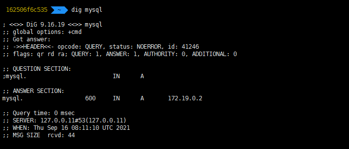
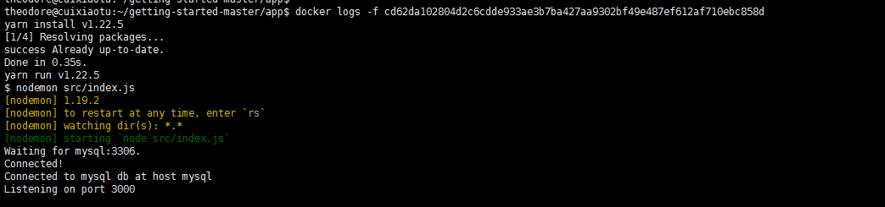
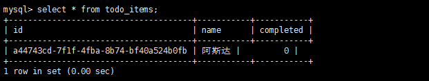

Docker学习6
多容器应用
之前都是使用单个容器的应用，当要接入mysql时，建议分开独立部署
不同于数据库的方式扩展 API 和前端
独立容器可以隔离稳定版本和更新版本
在生产中肯定不想在你的应用中发布你的数据库程序。
运行多个进程将需要一个进程管理器（容器只启动一个进程），增加了容器启动/关闭的复杂性
容器网络
如果两个容器运行在同一个网络上，则他们可以交互。
让我们连接todo app和mysql。
# 创建容器网络
docker network create todo-app
# 启动mysql 官方文档：https://hub.docker.com/_/mysql/
docker run -d \
--network todo-app --network-alias mysql \
-v todo-mysql-data:/var/lib/mysql \
-e MYSQL_ROOT_PASSWORD=secret \
-e MYSQL_DATABASE=todos \
mysql:5.7
# 进入mysql
docker exec -it <mysql-container-id> mysql -u root -p secret
show databases;
# 没有todos库的话 创建一个
# 为了方便输入中文 mysql默认字符集为latin cli出现乱码请百度自行修改配置
create database todos chartset='uft8';连接mysql
使用nicolaka/netshoot 来进行网络调试
docker run -it --network todo-app nicolaka/netshoot
#使用dig命令找出mysql 的 IP 地址。
dig mysql
# 在下图 ANSWER SECTION中可以看到mysql的解析地址
运行MySQL+app
# MYSQL_HOST - 运行MySQL的主机名
# MYSQL_USER - 用户名
# MYSQL_PASSWORD - 密码
# MYSQL_DB - 连接库
# 配置环境变量后启动todo app
docker run -dp 3000:3000 \
-w /app -v "$(pwd):/app" \
--network todo-app \
-e MYSQL_HOST=mysql \
-e MYSQL_USER=root \
-e MYSQL_PASSWORD=secret \
-e MYSQL_DB=todos \
node:12-alpine \
sh -c "yarn install && yarn run dev"
# 查看日志
docker logs <container-id>
# 进入mysql查看
docker exec -it <mysql-container-id> mysql -p todos
# 查看表中数据是否正常 出现乱码请百度自行修改配置 SET NAMES utf8;
select * from todo_items;

本博客所有文章除特别声明外，均采用 CC BY-SA 4.0 协议 ，转载请注明出处！